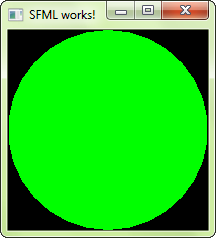

This tutorial is the first one you should read if you're using SFML on Linux. It will explain how to install SFML, and compile projects that use it.
There are different approaches to the installation of SFML on Linux:
Option 1 is the preferred one; if the version of SFML that you want to install is available in the official repository, then install it using your package manager. For example, on Debian you would do:
sudo apt-get install libsfml-dev
Option 3 requires more work: you need to ensure all of SFML's dependencies including their development headers are available, make sure CMake is installed, and manually execute some commands. This will result in a package which is tailored to your system.
If you want to go this way, there's a dedicated tutorial on building SFML yourself.
Finally, option 2 is a good choice for quick installation if SFML is not available as an official package. Download the SDK from the download page, unpack it and copy the files to your preferred location: either a separate path in your personal folder (like /home/me/sfml), or a standard path (like /usr/local).
If you already had an older version of SFML installed, make sure that it won't conflict with the new version!
In this tutorial we're not going to talk about IDEs such as Code::Blocks or Eclipse. We'll focus on the commands required to compile and link an SFML executable. Writing a complete makefile or configuring a project in an IDE is beyond the scope of this tutorial -- there are better dedicated tutorials for this.
If you're using Code::Blocks, you may refer to the Code::Blocks tutorial for Windows; many things should be similar. You won't have to set the compiler and linker search paths if you installed SFML to one of your system's standard paths.
First, create a source file. For this tutorial we'll name it "main.cpp". Put the following code inside the main.cpp file:
#include <SFML/Graphics.hpp>
int main()
{
sf::RenderWindow window(sf::VideoMode(200, 200), "SFML works!");
sf::CircleShape shape(100.f);
shape.setFillColor(sf::Color::Green);
while (window.isOpen())
{
sf::Event event;
while (window.pollEvent(event))
{
if (event.type == sf::Event::Closed)
window.close();
}
window.clear();
window.draw(shape);
window.display();
}
return 0;
}
Now let's compile it:
g++ -c main.cpp
In case you installed SFML to a non-standard path, you'll need to tell the compiler where to find the SFML headers (.hpp files):
g++ -c main.cpp -I*<sfml-install-path>*/include
Here, <sfml-install-path> is the directory where you copied SFML, for example /home/me/sfml.
You must then link the compiled file to the SFML libraries in order to get the final executable. SFML is made of 5 modules (system, window, graphics, network and audio), and there's one library for each of them.
To link an SFML library, you must add "-lsfml-xxx" to your command line, for example "-lsfml-graphics" for the graphics module (the "lib" prefix and the ".so" extension of the library file name must be omitted).
g++ main.o -o sfml-app -lsfml-graphics -lsfml-window -lsfml-system
If you installed SFML to a non-standard path, you'll need to tell the linker where to find the SFML libraries (.so files):
g++ main.o -o sfml-app -L*<sfml-install-path>*/lib -lsfml-graphics -lsfml-window -lsfml-system
We are now ready to execute the compiled program:
./sfml-app
If SFML is not installed in a standard path, you need to tell the dynamic linker where to find the SFML libraries first by specifying LD_LIBRARY_PATH:
export LD_LIBRARY_PATH=*<sfml-install-path>*/lib && ./sfml-app
If everything works, you should see this in a new window:
